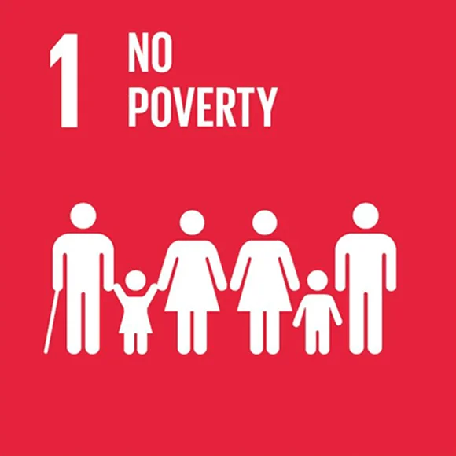
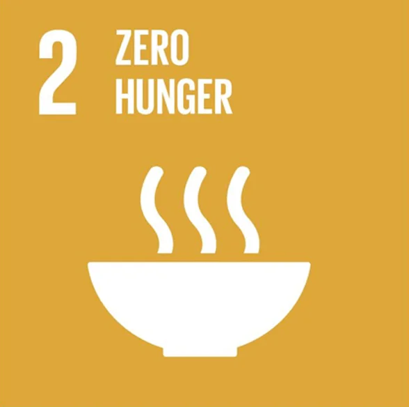
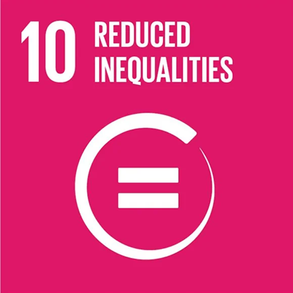
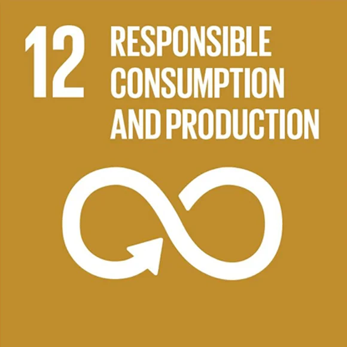
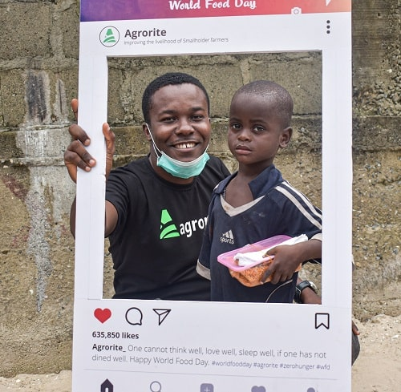
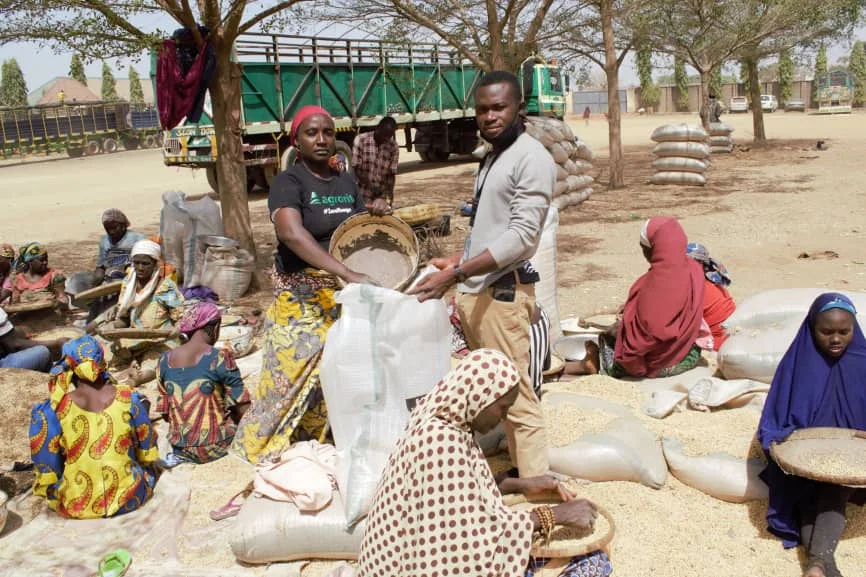
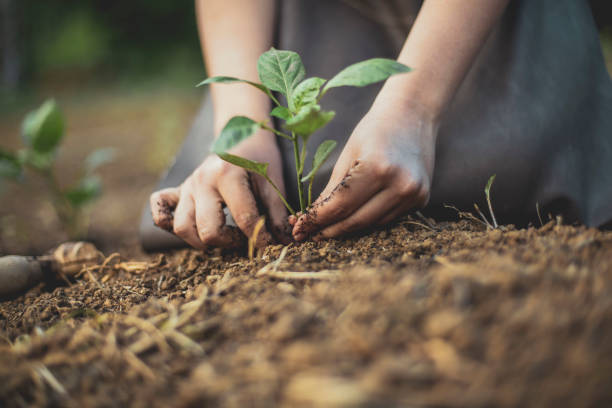

Impact Agenda
Our Impact Agenda clearly demonstrates our passion and consistent efforts in realizing the Sustainable Development Goals (SDG)




Goal 1: NO POVERTY
Eradicating poverty in all its forms remains one of the greatest challenges facing humanity.Agrorite is responding to this pressing issue by empowering smallholder farmers to increase their income in other to live above the poverty line.

Goal 2: ZERO HUNGER
By supporting small-scale farmers with finance, advisory support and premium markets we directly improve agricultural productivity hence, making sure all people–especially children–have sufficient and nutritious food all year.

Goal 10: REDUCED INEQUALITY
We are closing up the widening disparities causing inequality by empowering farmers who are low income earners and promoting economic inclusion for small holder farmers regardless of sex, ethnicity or physical disabilities.
Goal 12: RESPONSIBLE CONSUMPTION AND PRODUCTION
To encourage responsible consumption and production of food, our logistics and operation team have put in place a successful method of reducing waste by bringing our offtakers to the farm gate on harvest day so that there will be no wastage of food and man-power.
